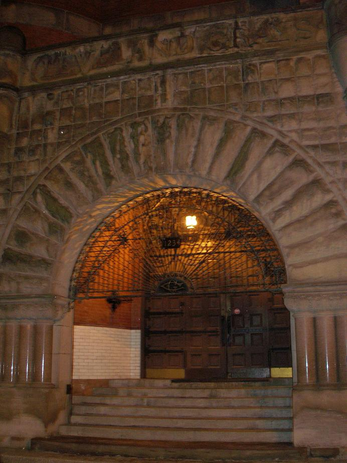
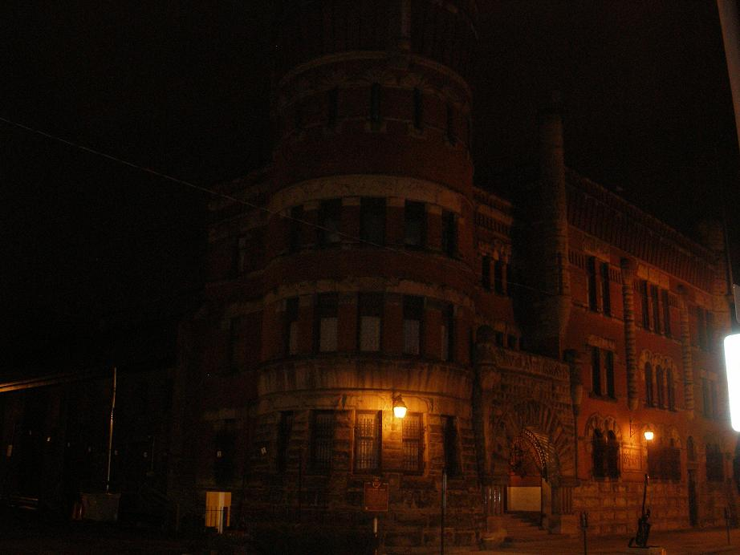
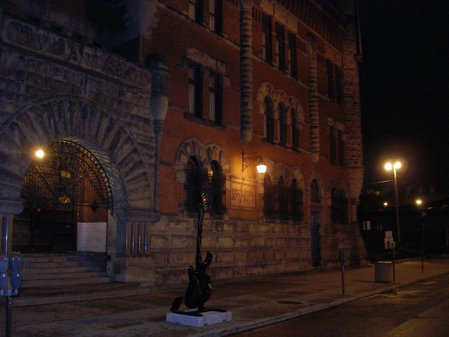
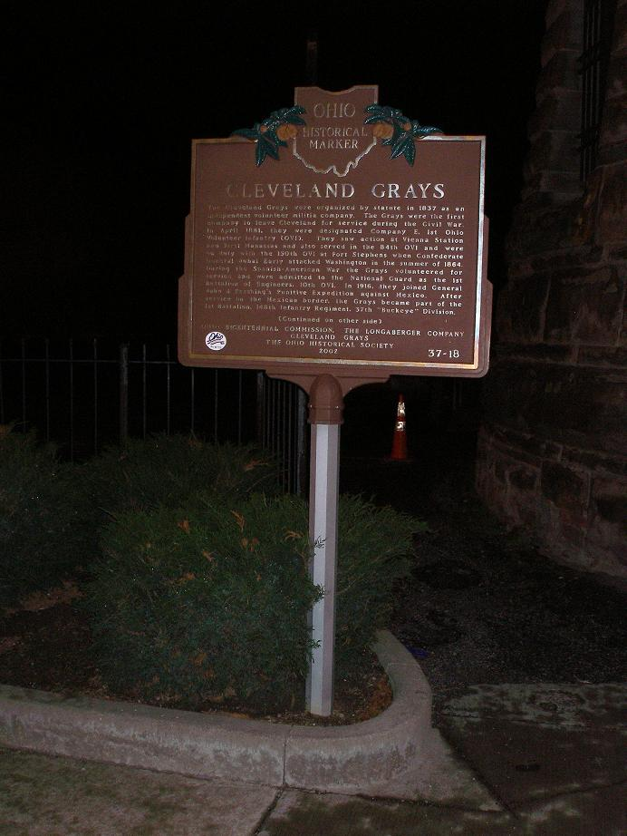

Grays Armory

The Armory built by the Cleveland Grays in 1893 is said to be haunted by apparitions and the sound of ghostly footsteps on the staircases and floors. The Grays were founded in 1837 as a city militia, but they were so well-trained, drilled, and disciplined that the city of Cleveland sent them proudly to fight in every major American conflict from the Civil War through World War One. Today the armory is a tourist attraction and museum, not hard to find at 1234 Bolivar Road.




My first visit to the Gray's Armory was a very superficial one; thanks to Orin from WCSB I was able to see the building from the outside and take a few pictures right before an all-night radio interview during the Halloween season of 2008. I intend to go back and see more as soon as possible--particularly since they do offer regular tours of the castle-like structure.

Gray's Armory Museum
Creepy Cleveland - Gray's Armory
Back